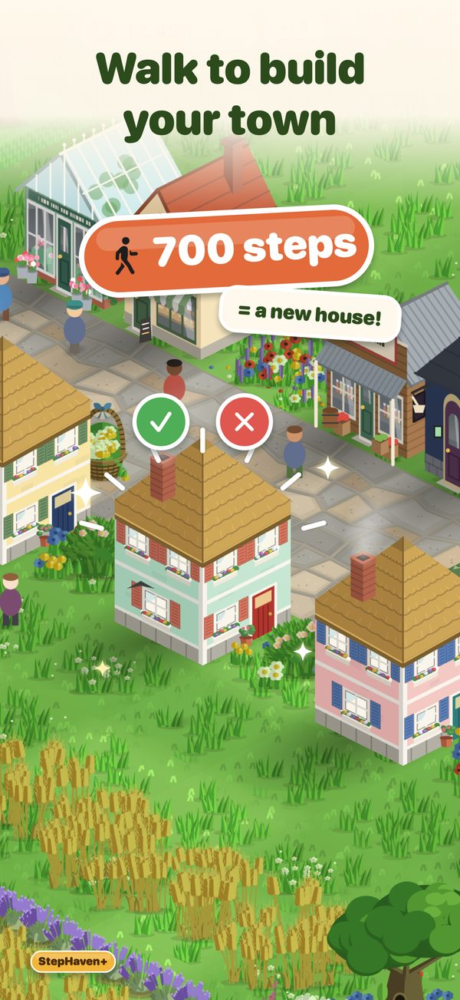
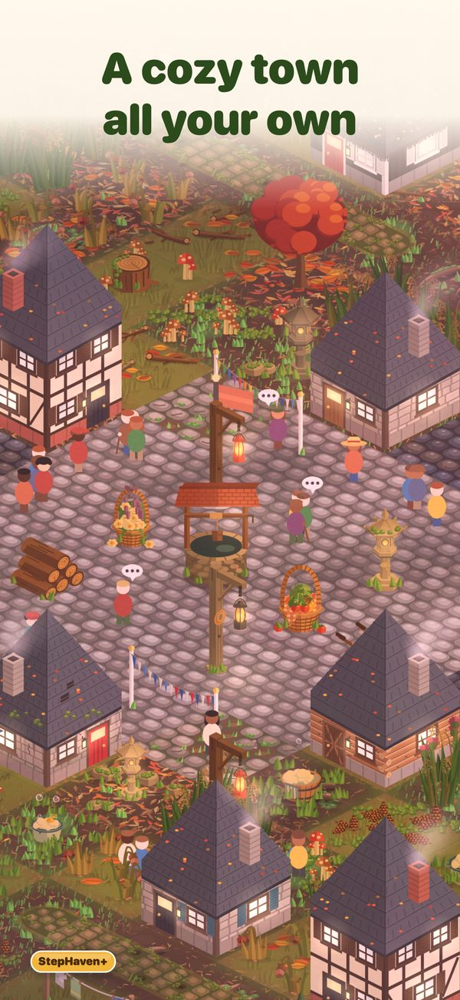
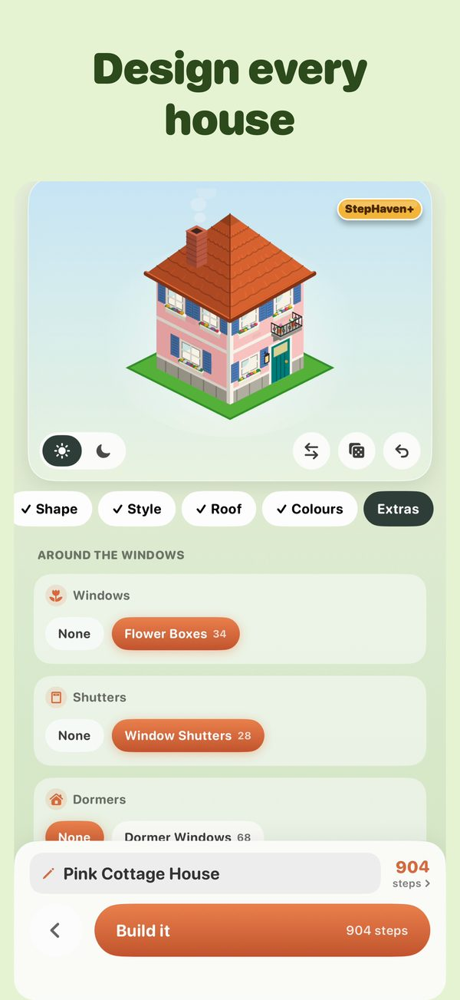
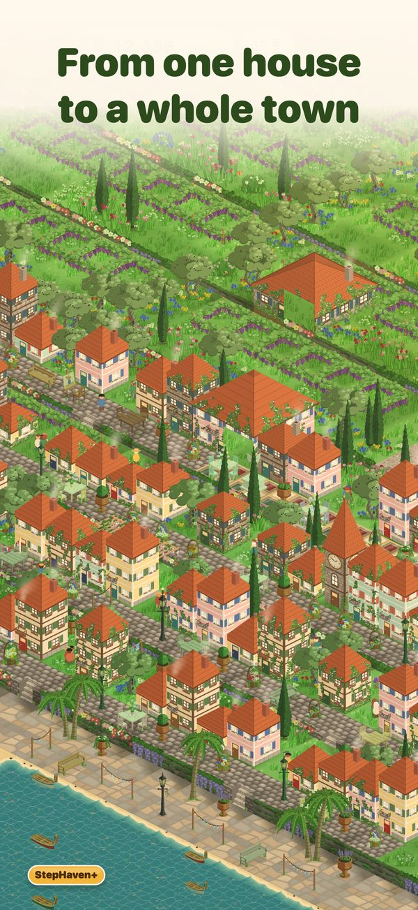
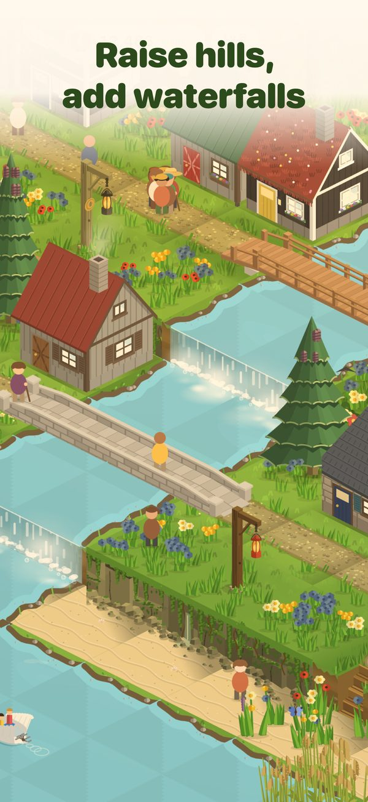
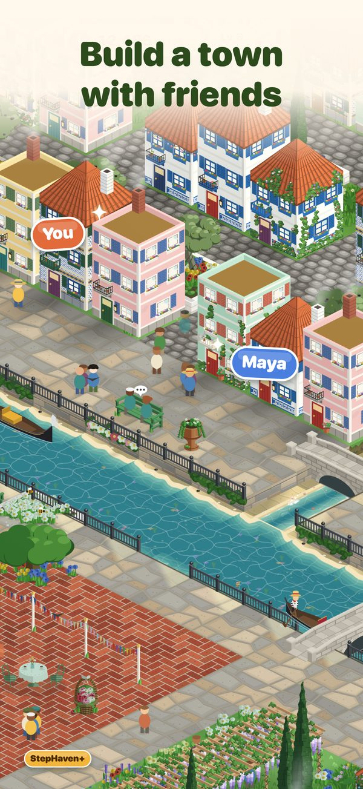
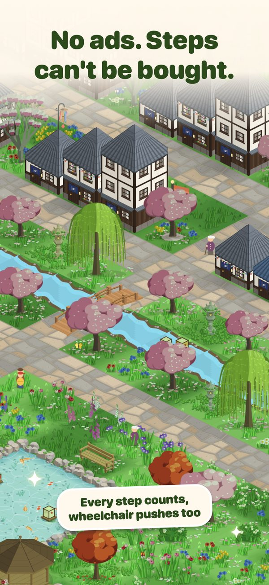
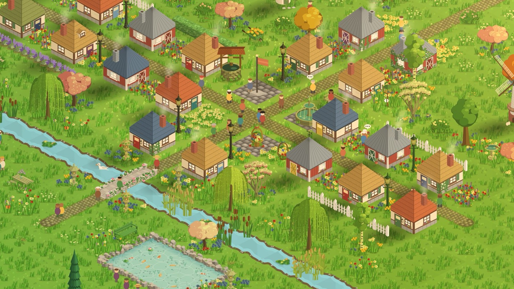
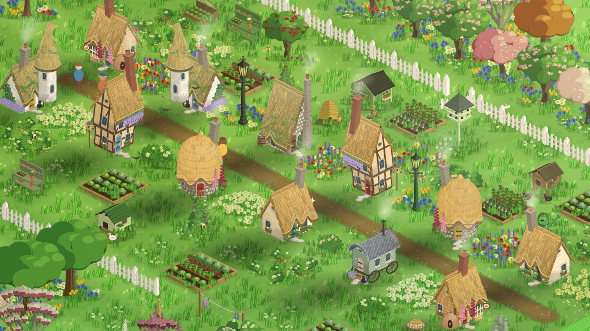

How a walk becomes a town
Your iPhone already counts your steps, and so does an Apple Watch. StepHaven reads them from Apple Health, so there's nothing to start or switch on. Go out, come back, build.
Walk
Every step is a point to spend. A walk round the block buys a bench or a lantern.
Build
Place cottages, oaks, flower beds, ponds and paths. An ordinary day on your feet pays for a house.
Watch it grow
Villagers move in, wander the lanes and head home after dark. Deer and foxes come by once there's enough green.

Have a look around






Trains, boats, and a town that glows
Lay a railway and watch a steam train pull into the station. Row a gondola down the canal or send a paddle steamer across the lake. When evening comes, every window lights up, and the seasons turn through the year.
Make it yours
Workshop houses
Design your own: shape, roof, door colour, chimney smoke.
Trees and gardens
Oaks, cherry trees, wildflowers, koi ponds, a gnome with a lantern.
Hills and water
Paint the ground, raise hills, dig ponds, run waterfalls.
Railway
Lay track and watch a steam train pull into the station.
Boats and canals
Gondolas, sailboats and a paddle steamer on the lake.
Shared towns
Build one town with up to three friends, each on their own steps.
Every kind of moving
Wheelchair pushes count like steps. Ember counts workouts.
Widgets
Your town on the Home Screen, a workout on the Lock Screen.
The StepHaven Code
- No ads, and no waiting timers.
- Steps can't be bought. Everything in your town was paid for by walking.
- Your step count stays on your phone. It isn't sent to us or anyone else.
- Works offline. You only need a connection for iCloud backup and shared towns.
Before you set off
What is StepHaven?
StepHaven, one word, is a cozy town-building game for iPhone, made by an independent developer. You play it by walking: your steps become points you spend on cottages, gardens, trains and boats for your own little town.
Is StepHaven free?
Yes, it's free to play, with one town of your own and one to share. StepHaven+ is an optional membership that adds more Workshop shapes and styles and more towns. Item packs such as Cottage Garden are sold separately. Steps themselves are never for sale.
Do I need an Apple Watch?
No. Your iPhone counts your steps on its own. A Watch adds the steps you take without your phone, and it's needed for Ember workouts and wheelchair pushes.
Can I play if I use a wheelchair?
Yes. Turn on Count Wheelchair Pushes and the pushes your Apple Watch records earn points just like steps.
What does StepHaven do with my health data?
It reads your steps (and pushes or Ember workout data, if you use them) from Apple Health on your phone, only to work out your points. That data never leaves your phone. Read the privacy policy.
Can I play with friends?
Yes. Start a shared town in the app and send a friend the code. You both build in the same place, while your steps, points and items stay your own.
From the journal

How StepHaven turns your steps into a town
What a walk buys, and why steps can't be bought.

Every kind of moving counts
Wheelchair pushes, rides, swims and other workouts.

Building a town with friends
One town, up to four people, everyone's own steps.